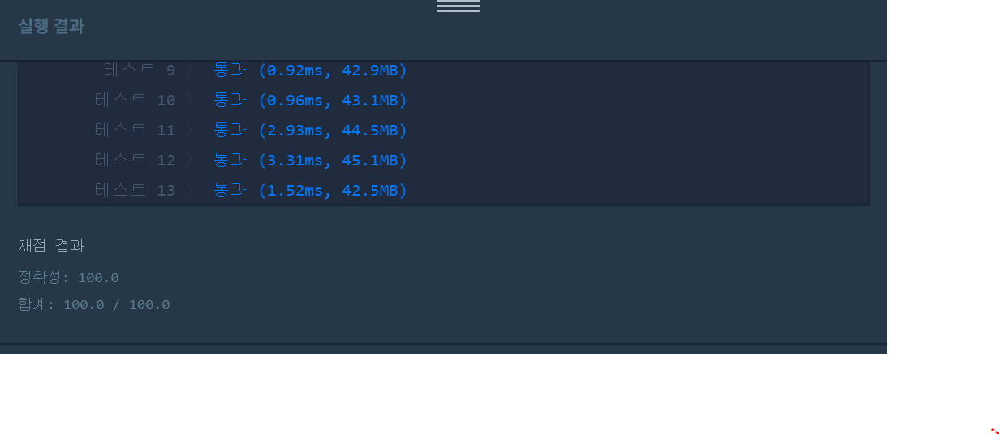

👀 문제
https://programmers.co.kr/learn/courses/30/lessons/43162
👊 도전
1. 설계
- 연결된 노드를 끝까지 찾아가야하므로 DFS이다. 따라서 재귀함수를 사용한다.
- solution()에서 n개의 노드들을 확인한다. 아직 방문하지 않았다면 방문한다.
- 재귀로 현재 노드와 연결된 것들도 모두 방문한다.
2. 구현 (성공 코드)
1
2
3
4
5
6
7
8
9
10
11
12
13
14
15
16
17
18
19
20
21
22
23
24
25
26
/**
*
* @author HEESOO
*
*/
class Solution {
public int solution(int n, int[][] computers) {
int answer = 0;
boolean[][] visit=new boolean[n][n];
for(int i=0;i<n;i++){//n개의 노드 체크
if(!visit[i][i]){//아직 방문하지 않았다면
dfs(i, n, visit, computers);// 현재노드와 연결된 노드들도 찾아서 방문
answer++;
}
}
return answer;
}
public void dfs(int me, int n, boolean[][] visit, int[][] computers){
for(int i=0;i<n;i++){//나와 연결된 노드들을 모두 확인
if(computers[me][i]==1&&!visit[me][i]){//나와 연결되어있는데 방문하지 않았다면
visit[me][i]=true;//방문
dfs(i, n, visit, computers);//방문한 곳을 기준으로 재귀호출
}
}
}
}
3. 결과
 🤟 성공 🤟
4. 설명
- 메인문에서 모든 노드들을 체크한다.
- 1부터 n까지 노드들을 확인한다.
- 아직 방문하지 않았다면 그 노드를 기준으로 연결된 노드들을 확인한다.
- 현재 노드와 연결된 노드들을 찾는 것은 네트워크 하나를 찾는 것과 같으므로 answer++한다.
- 연결된 노드를 확인하기 위해 재귀함수를 사용한다.
- 특정 노드와 연결된 노드들을 모두 찾아야 하므로 DFS이다(나와 연결된 노드의 끝까지 방문해야하기때문).
- solution()에서 i번째 노드와 연결된 것들을 찾기위해 dfs를 호출하면, computers[i]행의 원소들을 순회하며 연결된 노드들을 찾고 방문한다.
- 연결된 노드를 찾으면 그 노드를 기준으로 다시 dfs를 재귀호출하여 그 노드와 연결된 노드들을 또 찾는다.
- 이렇게 하면 마지막까지 도달하게 되고, 그 과정에서 방문한 노드들은 true가 되어 중복 방문을 피할 수 있게 된다.
👏 해결 완료!
문제가 노드들의 방문이길래 당연히 BFS인줄 알았다. 분발하자T_T